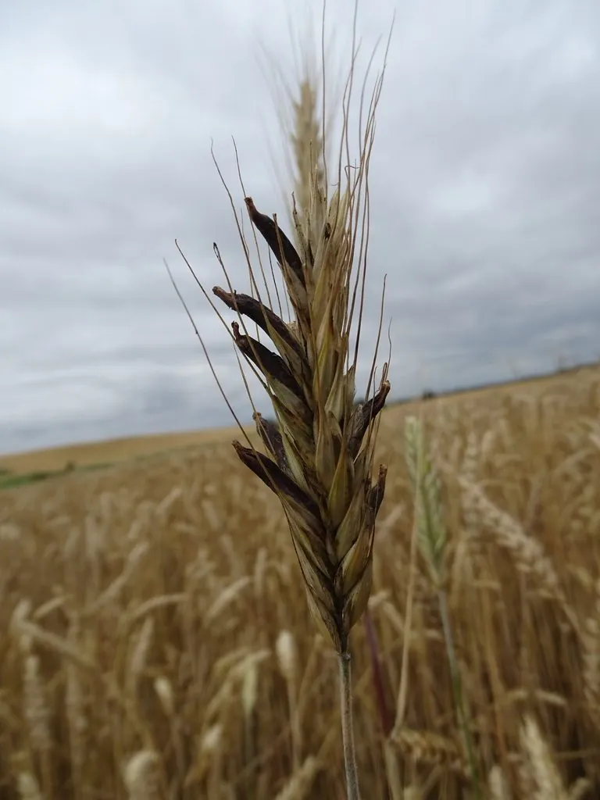

真菌 · 真菌界
麦角菌 Claviceps purpurea

麦角菌寄生在麦类子房上形成黑紫色“麦角”，含麦角生物碱，有药用价值，但误食会中毒，需严防混入粮食。
- 分类
- 门子囊菌门纲粪壳菌纲目肉座菌目科麦角菌科属麦角菌属
- 栖息环境
- 麦类作物的子房，温带麦区潮湿季节易发生
- 地理分布
- 北半球温带麦区广泛分布，中国北方麦区有记录
- 保护级别
- 暂无评估（植物病原真菌）
物种志
麦角菌是子囊菌门麦角菌科的真菌，主要寄生于黑麦、小麦、大麦等禾本科植物的子房。它侵染花部后，菌丝在子房中发育，形成坚硬的紫黑色角状菌核，称为“麦角”，长 1–3 cm。麦角落到土中越冬，来年春季萌发，长出带球形子囊壳的子座，释放子囊孢子再侵染麦类。
麦角菌在温带麦区广泛分布，历史上曾造成严重的麦角中毒事件，患者出现幻觉、坏疽等症状，中世纪欧洲的“圣安东尼之火”即与此有关。麦角含麦角胺、麦角新碱等生物碱，是重要的药用原料，可用于产后止血、治疗偏头痛；但麦角生物碱毒性很强，误食含麦角的粮食会中毒。因此，粮食加工时必须严格清除麦角，保证食品安全。
形态与习性
- 寄主黑麦、小麦、大麦的子房
- 菌核紫黑色角状，称“麦角”
- 生活史菌核越冬，春季萌发释放孢子
- 药用含麦角胺、麦角新碱
- 毒性误食会中毒，可致幻觉与坏疽
- 防控粮食加工需清除麦角
趣味知识
- 麦角菌寄生在麦子花里，形成紫黑色的角状菌核，所以叫“麦角”。
- 中世纪欧洲的“圣安东尼之火”就是麦角中毒引起的大规模事件。
- 麦角生物碱可入药止血、治偏头痛，但毒性很强，误食会中毒。